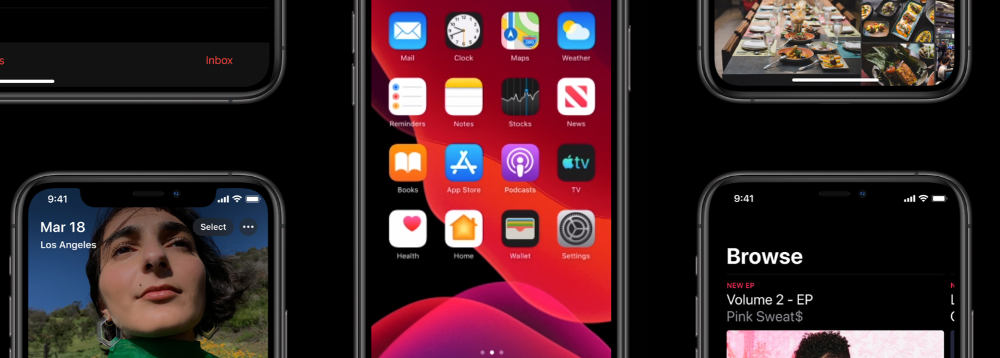
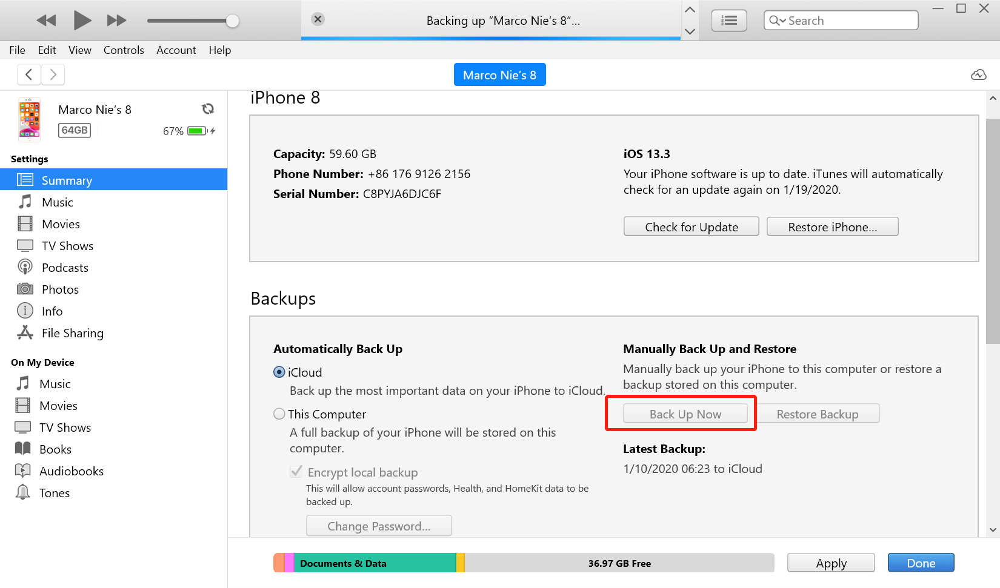

iOS 刷入全新固件

现在 iOS 进行升级最常用的就是直接在手机端在线升级，这样很方便不需要电脑端操作，但有时候会出现各种各样的问题，比如手机卡顿，电量消耗过快等问题。可以尝试将系统进行一次全新安装，可能解决一些问题。
备份数据
如果设备开启了 find my iPhone，请提前暂时关闭，不然可能在恢复系统后提示需要输入验证码。
下载最新版 iTunes，连接手机到电脑端，提示是否信任设备，点击信任。
点击手机按钮进入管理手机界面，找到备份按钮，点击备份，提示是否加密备份，设置密码进行加密：

等待备份完成后进行固件恢复操作。
固件下载
到信任的网站下载对应设备的固件。
爱思助手：https://www.i4.cn/firmware.html
根据设备型号，下载固件到本地电脑。
恢复系统
系统备份以及固件下载完成后可以进行系统恢复了。
按住 shift 键点击 恢复iPhone，提示选择固件，找到下载的对应固件后开始恢复系统。
恢复完成后，可以进行数据恢复。
打开find my iPhone。